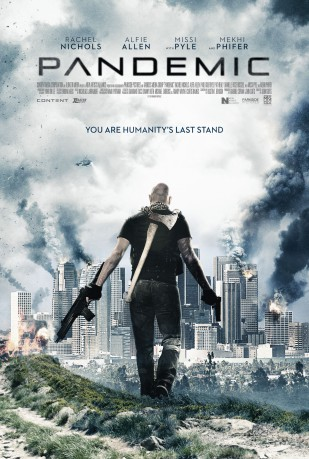
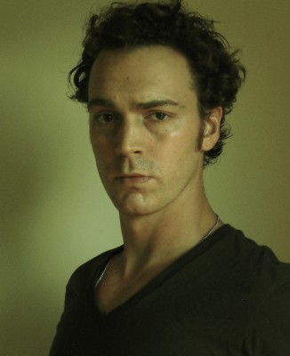

#3533 Pandemic: Fear the Dead
Alternativ: Pandemic
 
 IMDB-Wertung: 4.6 / 10
IMDB-Wertung: 4.6 / 10  Metascore: 0
Metascore: 0 
In einer nicht allzu weit entfernten Zukunft hat ein bedrohliches Virus die Infizierten in Zombie-ähnliche Kreaturen verwandelt und eine Pandemie unaussprechlichen Ausmaßes ausgelöst: Die moderne Zivilisation, wie wir sie kennen, existiert nicht mehr. Um das Ende der Menschheit zu verhindern, sucht die ambitionierte Ärztin Lauren nach einem Heilmittel gegen das verheerende Virus. Begleitet wird sie von ihrem Team, bestehend aus Gunner. Denise und Wheeler. Zusammen machen sie sich im luftdichten Anzug auf in bereits verseuchte Gebiete, in der Hoffnung, dort einen Anhaltspunkt für ein Heilmittel zu finden. Ihre Aktionen werden dabei von einer Kamera gefilmt. Doch die Gruppe ist nicht gewappnet für das, was sie zu sehen bekommen. Mit ihrer Rettungsaktion begeben sie sich außerdem zunehmend in Gefahr und setzen damit das Schicksal der Menschen aufs Spiel.
Jahr: 2016
Dauer: 92 Minuten
FSK: 18
Land: USA Studio: XLrator MediaTonspuren: DTS - ,
Untertitel:
Auflösung: 1080p (1920x816) Größe: 6021 MB
Genre: Action, Thriller, Sci-Fi
Regisseur: John Suits
Drehbuch: Bernard Gordon
Soundtrack:
Darsteller:
- Rachel Nichols als Lauren
 Alfie Allen als Wheeler
Alfie Allen als Wheeler Missi Pyle als Denise
Missi Pyle als Denise Mekhi Phifer als Gunner
Mekhi Phifer als Gunner Paul Guilfoyle als Doctor Greer
Paul Guilfoyle als Doctor Greer- Danielle Rose Russell als Megan
 Pat Healy als Doctor Ward
Pat Healy als Doctor Ward- Robert Lewis Stephenson als David
- Amanda Baker als Ella
- Sara Tomko als Alice
-  Dominic Bogart als Sergeant O'Brien
- Alexander Ward als Level 5 Infected
- Jeff Atik als Cowering Infected
- Kim Estes als Armed Guard
 Jaime Gallagher als Mary
Jaime Gallagher als Mary- Luke Barnett als Desperate Infected
- Charlie Barnick als Infected , uncredited
- Samantha Baugnon als Infected , uncredited
- Jola Cora als Infected , uncredited
- Nea Dune als Infected , uncredited
- Matthew Jay Evans als Survivor , uncredited
- Emma Farabee als Infected , uncredited
 Martavious Gayles als Infected , uncredited
Martavious Gayles als Infected , uncredited- Aaron Hawley als Infected , uncredited
- Brandon Higa als Robbie , uncredited
- Joey Hoppe als Infected , uncredited
- Anna-Sophie Keller als Infected , uncredited
- Stephanie Langnas als Infected , uncredited
- Gina Lee als Infected , uncredited
- Josh Madson als Infected , uncredited
- Claudia Magira als Infected , uncredited
- David McMenomy als Priest , uncredited
- Rio Shigeta als Infected , uncredited
- Britain Simons als Survivor , uncredited
- Matt Socia als Soldier , uncredited
- Yvette Soledad als Infected , uncredited
- Malerie Stanley als Infected , uncredited
- Aldo Vipp als Infected , uncredited
- Jenna Z. Wilson als Infected , uncredited
- Sarah Suits als Infected Survivor
- David Suits als Infected
- Cassandra Bautista als Infected , uncredited
- Jackee Bianchi als Survivor , uncredited
- Timothy D'Andrea als Infected , uncredited
- Kinjal Dave als Infected , uncredited
- Jasmin Day als Infected , uncredited
- Anthony Eftimeo als Soldier , uncredited
- Delia Gomez als Infected , uncredited
- Matto Ken als Infected , uncredited
- Chucki Love als Infected , uncredited
Datei: X:\FSK18-2016\Pandemic Fear the Dead (2016, FSK18, 1920x816).mkv seit 26.04.2016
Festplatte: FSK18
 Es gibt insgesamt 25 Filme in der Gruppe 'FSK18-2016'
Es gibt insgesamt 25 Filme in der Gruppe 'FSK18-2016'